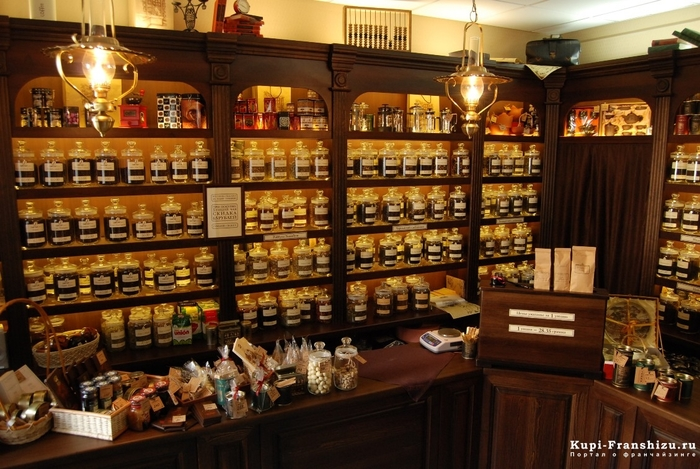
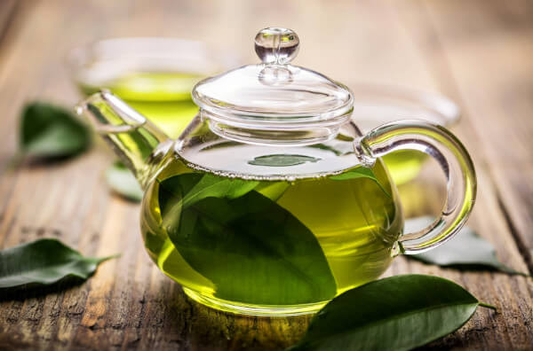
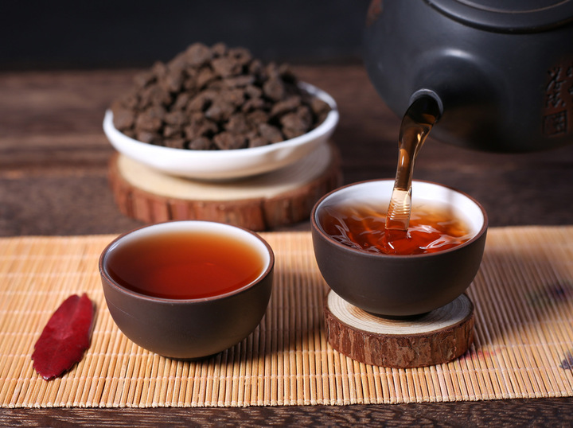
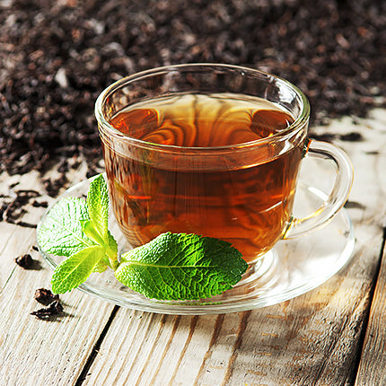
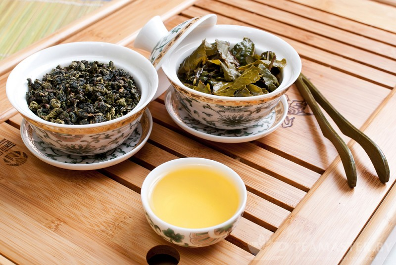
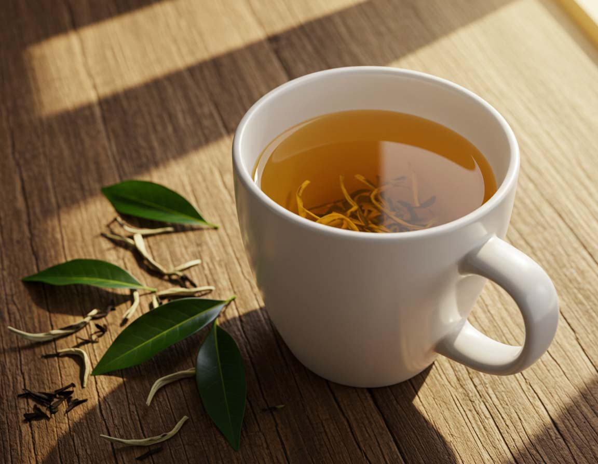
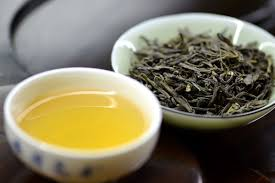

Про нас
Ласкаво просимо до нашого чайного простору — місця, де кожна чашка дарує тепло, затишок і нові смаки. Ми ретельно відбираємо найкращі сорти чаю з різних куточків світу, щоб познайомити вас з багатством чайних традицій та культур. У нашому асортименті ви знайдете класичні чорні та зелені чаї, ароматні трав'яні суміші, екзотичні фруктові композиції та преміальні сорти для справжніх поціновувачів. Ми віримо, що чай — це більше, ніж напій. Це особливий ритуал, який допомагає насолоджуватися моментом і створювати атмосферу гармонії. Наша мета — зробити якісний чай доступним для кожного та допомогти вам знайти саме той смак, який стане вашим улюбленим. Запрошуємо відкрити для себе світ справжнього чаю разом з нами. 🍵✨

Каталог
Зелений чай

Зелений чай здавна відомий як лікарський напій. Його застосовують для нормалізації артеріального тиску, зміцнення стінок судин та капілярів.
Пуер

Пуер — це унікальний китайський постферментований чай із провінції Юньнань. На відміну від інших чаїв, він проходить процес природного або прискореного мікробного бродіння, через що з роками стає лише кращим і смачнішим.
Чорний чай

Чорний чай — вид чаю, який отримують шляхом повного або майже повного окиснення листа чайного куща. Китайські чорні чаї в Китаї називають червоними або багряними.
Улун

Чай улун (або охолонг) — це традиційний китайський напівферментований чай. За ступенем окиснення (від 30% до 70%) він займає проміжне місце між легким зеленим та насиченим чорним чаєм.
Білий чай

Білий чай має надзвичайно тонкий аромат, який дуже легко вбирає навколишні запахи. Саме тому збиральникам чаю заборонено вживати в їжу цибулю, часник та гострі спеції, інакше вони можуть занапастити оригінальний аромат чаю.
Жовтий чай

Жовтий чай загалом схожий на зелений чай але має деякі відмінності у технології виробництва, а саме — уповільнена стадія сушіння. Цей технологічний прийом надає жовтому чаю особливий аромат, за який він і цінується.
Відгуки
Найкращий чайний магазин у моєму житті. Готова витратити всі кошти на те, щоб спробувати усі види чаю у цьому магазині!!
Дуже смачний чай, особливо мені сподобався зелений. Скоро буду брати кредит, щоб купити більше зеленого чаю.